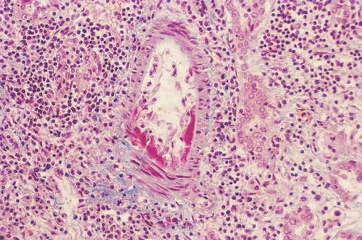
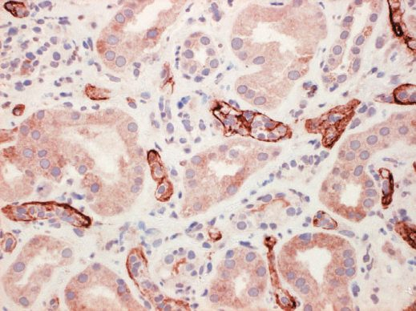

Transplant Immunology and Rejection
Summary
- The immune system represents the major biological hurdle in transplantation [1].
- Everything else (the operation, the preservation solution, the follow-up) exists to work around it.
- This page covers the antigens that make an organ foreign, how the recipient recognises and attacks it, the tests done before transplantation to predict that attack, and the five patterns of rejection distinguished by their timing and mechanism. HLA-DR is the single most important antigen overall in donor-recipient matching, and the crossmatch is what stands between a patient and hyperacute rejection [2].
Definition
HLA (human leucocyte antigen) is a cell surface protein that allows recognition of self, encoded on the region of the genome called the major histocompatibility complex [1]. HLA is the MHC in humans [2].
Allorecognition is the identification of antigen as non-self; alloresponse is the overall immune response mounted against it [1]. Rejection is injury to tissue by the host immune response [1]. Tolerance is a lack of immune response to alloantigen where such a response is expected or has occurred previously [1].
A xenograft is tissue transplanted between species; allo- denotes tissue from genetically different members of the same species [1].
Pathophysiology
The two antigen systems
ABO blood group antigens matter because a patient with one blood group carries antibodies to the others (a patient of group A has anti-B antibodies) so an ABO-incompatible organ is rapidly destroyed by antibody against the incompatible blood type [1]. ABO compatibility is generally required for all transplants except the liver [2].
HLA antigens are the major target of the immune response in transplantation [1]. There are two classes and six main subgroups: class I is A, B and C; class II is DP, DQ and DR [1]. Class I is present on all cell membranes; class II is less allogeneic and present only on certain cell types [1]. Each individual has two copies of each HLA gene [1].
In kidney transplantation, HLA-A, -B and -DR are the antigens that determine outcome and so are the ones reported as mismatch [1]. The maximum number of mismatches is six, reported as 2-2-2, and the minimum is zero, reported as 0-0-0; the more mismatches, the higher the chance of rejection and the poorer the outcome [1]. The ABSITE Review reaches the same list from the other direction: HLA-A, B and DR are most important in matching, with HLA-DR most important overall [2].
Allorecognition
Allorecognition depends on two steps, and a third permission. Alloantigen must first be taken up and complexed with surface HLA molecules on antigen-presenting cells, dendritic cells and macrophages; then antigen-specific host T-cell receptors must bind the peptide fragments of alloantigen complexed with those HLA molecules [1]. That binding only activates a response if there is also a co-stimulatory signal from the antigen-presenting cell [1], which is the mechanism belatacept was designed to block.
Direct recognition is donor antigen-presenting cells presenting alloantigen to host T-cells; indirect recognition is host antigen-presenting cells doing so [1].
Allorecognition is a function mainly of the adaptive immune response, but it depends on priming by an inflammatory response from the innate system, a response transplantation supplies twice over, from the surgery itself and from ischaemia-reperfusion injury in the graft [1].

Alloresponse
Three effector pathways destroy the graft [1]:
1. Cellular cytotoxic response, mediated by CD8+ cytotoxic T-cells. 2. Humoral response, mediated by alloantigen-specific B-cells activated by CD4+ T-cells, producing antibodies that damage the graft predominantly by activating the complement cascade. 3. Delayed hypersensitivity reaction, mediated by CD4+ T-cells producing an inflammatory response through macrophage activation and pro-inflammatory cytokines.
- T-cells mature in the thymus, and those that bind thymic tissue (self) are destroyed [1].
- CD4+ T helper cells coordinate the response and CD8+ cytotoxic T-cells carry it out; regulatory T-cells are also CD4+ and reduce the alloreactive response [1].
- B-cells mature in bone marrow, produce antibodies, and undergo clonal expansion triggered and coordinated by T helper cells [1].
Clinical features
- Patients with rejection are often asymptomatic.
- Clinical features depend on the organ and are generally manifested by biochemical evidence of impaired organ function or injury, a rising transaminase after liver transplantation, a rising creatinine after kidney transplantation [1].
- Systemic immune symptoms are less common, but there may be low-grade fever, malaise and tenderness over the graft [1].
Immunosuppression may mask symptoms until rejection is quite advanced, which is the argument for surveillance biopsy rather than waiting for a clinical change [1].
Etiology
The five patterns of rejection are distinguished by timing and by what mediates them [2].
| Type | Timing | Mechanism |
|---|---|---|
| Hyperacute | Minutes to hours | Preformed antibodies that the crossmatch should have detected; a type II hypersensitivity reaction |
| Accelerated | Under 1 week | Sensitised T-cells to donor HLA |
| Acute cellular | After the first week | Cytotoxic and helper T-cells against HLA antigens; cell-mediated |
| Acute humoral | After the first week | Antibodies to donor antigens |
| Chronic | Months to years | Partly a type IV hypersensitivity reaction, with antibody formation also playing a role |
Hyperacute rejection activates the complement cascade with thrombosis of vessels, and its most common cause is ABO incompatibility [2]. The Oxford Handbook describes the same event as immediate tissue oedema, haemorrhage and thrombosis, capable of producing a severe systemic reaction like an ABO-incompatible blood transfusion, and adds the important qualifier that it should never occur, because of cross-matching [1].
Chronic rejection leads to graft fibrosis; its most common cause is HLA incompatibility, and the risk factor is an increased number of acute rejection episodes [2]. The Oxford Handbook describes it as a poorly understood vasculopathy with fibrosis of small blood vessels occurring over years (intimal hyperplasia with dependent ischaemia and fibrosis) possibly related to the severity of acute inflammatory processes at the time of transplantation, such as ischaemia-reperfusion injury and acute rejection [1].
Chronic rejection is renamed by organ: chronic allograft nephropathy in the kidney, cardiac allograft vasculopathy in the heart [1].
Diagnosis
The primary role of tissue typing is to establish the ABO blood group and determine HLA expression in advance of transplantation [1].
The crossmatch detects preformed recipient antibodies to the donor organ, by mixing recipient serum with donor lymphocytes; if those antibodies are present the crossmatch is positive and hyperacute rejection would likely follow transplantation [2].
Panel reactive antibody uses an identical technique against a panel of HLA typing cells, giving the percentage of cells the recipient's serum reacts with [2]. A high PRA (above 50%) is often a contraindication to transplantation because of the increased risk of hyperacute rejection [2]. Transfusion, pregnancy, previous transplantation and autoimmune disease all raise the PRA [2].
Rejection is diagnosed by biopsy, which also determines whether it is cellular or humoral and can identify other causes of graft dysfunction [1]. Humoral rejection is diagnosed by specific histological features and CD4 positivity on the biopsy [1].

Thresholds and severity
Optimal surveillance is by protocol biopsy at pre-determined time points, typically 7 to 10 days after transplantation with repeat biopsies at intervals, reserved especially for organs where loss of function would be catastrophic [1].
The biopsy route is organ-specific: percutaneous imaging-guided biopsy in liver and renal transplantation, endoscopic biopsy in small bowel and lung, and transjugular biopsy in heart transplants or in liver transplants with uncorrectable coagulopathy [1].
UK practice treats mild rejection differently depending on the organ, and the kidney is the exception that is always treated. Asymptomatic mild rejection may be monitored in some organs but is always treated in renal transplants, as kidneys are very immunogenic [1].
The first-line regimen for acute rejection is a defined steroid pulse: up to 3 days of intravenous methylprednisolone at 500 to 1000 mg per day [1]. Repeat biopsy is performed if there is no improvement, followed by a repeat steroid course if rejection is ongoing, or rescue therapy if severe [1].
Rescue protocols use anti-T-cell antibodies such as anti-thymocyte globulin [1]. Plasmapheresis to remove antibodies is often required in humoral rejection [1].
Re-transplantation after graft loss from refractory rejection is not offered for every organ. It is occasionally performed, but not for the heart and lung, where results are extremely poor [1].
Treatment and Management
Mild rejection is treated with pulse steroids; severe rejection with steroid plus antibody therapy, ATG or thymoglobulin [2].
By type [2]:
- Hyperacute, emergent retransplantation, or simply removal of the organ if it is a kidney.
- Accelerated, increased immunosuppression, pulse steroids, possibly antibody therapy.
- Acute cellular, increased immunosuppression, pulse steroids, possibly antibody therapy.
- Acute humoral, pulse steroids, antibody therapy and plasmapheresis.
- Chronic, increased immunosuppression, but there is no really effective treatment; retransplantation is the option.
There is no specific treatment for chronic rejection at present, with re-transplantation the only possible effective option [1].
Procedural interventions
Diagnosis rests on biopsy rather than imaging, and the technique is dictated by the organ and by the patient's coagulation, percutaneous under ultrasound guidance for kidney and liver, endoscopic for small bowel and lung, transjugular where coagulopathy cannot be corrected [1].
Plasmapheresis is the procedural addition specific to humoral rejection, removing the antibodies that steroids alone will not clear [1][2].
Complications
The complication of rejection is graft loss, and the complication of preventing rejection is everything covered on the Immunosuppression page, infection, malignancy and drug toxicity.
A positive crossmatch missed before surgery produces hyperacute rejection on the table, with complement activation and vascular thrombosis, and the graft is lost immediately [2].
Repeated acute rejection episodes are the identified risk factor for chronic rejection [2], which is why an episode treated late matters beyond the episode itself.
Outcomes
Time on the list and HLA matching are the primary determinants of organ allocation in the United States [2]; the UK weighting is set out on the Organ Donation and Allocation page.
Graft outcome tracks mismatch directly: the greater the number of HLA mismatches, the higher the chance of rejection and the poorer the outcome [1].
Donors with hepatitis or HIV can be matched with recipients having the same disease [2], a reminder that the constraint is immunological compatibility rather than a clean bill of health.
References
- Oxford Handbook of Clinical Surgery, 5th ed., Ch. 20 Transplantation
- The ABSITE Review, 2022, Ch. 12 Transplantation
- Bailey & Love's Short Practice of Surgery, 28th ed., Ch. 88 Kidney transplantation and the principles of transplantation